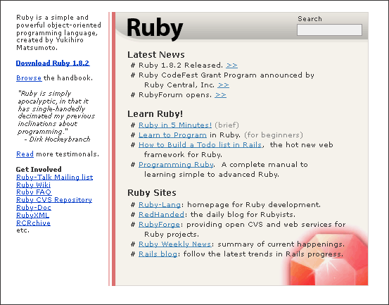

Ruby.org Mockup #
On Ruby-Talk, there’s been some discussion about working on a simple, friendly Ruby portal for new users. I think Ruby-Lang is pretty good actually (and has come a long way since NaHi redesigned as seen in the comments, NaHi did not redesign, he simply announced).
Still, after Ben Giddings mentioned the plausibility of negotiating ownership of Ruby.org or Ruby.net, I couldn’t let the idea go. Something like this:

Three things I like in this shot:
- Current sites are given preference. The links in the main body must all be active, current sites. No old docs. No old news. The featured news would require maybe 2 or 3 updates a month. This would be very simple.
- Rails is on the front page. Rails is a hot topic. The front page needs to reflect the most interesting aspects of Ruby to visitors.
- Ruby in 5 minutes. It would be great if we could pool together a simple summary of Ruby. A five-page, one-minute-per-page summary, similar to YAML in Five Minutes. If someone reads a short article on Ruby, they may start wanting to read more. (“I’ve read for five minutes, but I have some time, so why don’t I just spend the evening learning about this language?”)
I think Ruby has plenty of libraries. We could use more, but we have great libraries that a lot of communities don’t have. I think we could use better docs. Something closer to PHP or Python. This will happen, though. We have the content in RDoc, it just has to be organized.
We just need a web presence that is kept current. Most Ruby sites age several months without update.
I’d also love to emphasize using Ruby with C. Ruby’s C API is brilliant. It’s so fantasically elegant when compared to other scripting interfaces. I think an extensions section would be really attractive as well.
flgr
+1
I offered to volunteer at polishing ruby-lang.org, but I think I could hardly have done a better job than you.
chris2
Very, very nice. I’d rather like an explicit “Hot Libraries” or so categories for things like Rails, tho.
Joao Pedrosa
Or someone create such a nice layout for the RubyForge site. :-)
Great job.
Curt Hibbs
I hestitate to be just another commenter who merely says “this is great” (which is really is), so instead I’ll say that ruby home page would be 100 time better just adopting this as is, without debate. And move forward by tweaking on this excellent start!
chad
I love it.
I’m busy at work, but we’ve been talking behind the scenes about moving forward with idea of trying to get ahold of ruby.org and/or ruby.net. We (http://rubycentral.org) don’t have the bandwidth to maintain a killer Ruby site, but if we can grab the domains and relinquish control to Matz, that would be great.
Daniel Berger
Schveet. :)
fnord
donkey bullocks.
Robert McGovern
I’m sold on the layout, clean & simple and gets the point across. In a way the only thing it needs is dates so people know its “alive” and the hot libraries is cool, maybe combine click thru from RAA and downloads from Ruby Forge.
Updates might work best from a team so that someone should always be able to update and make it feel alive.
Baron
One thing I am sorely missing on the Ruby page is documentation to be used for citations in academic papers. Sure, I can write about how Ruby can be found being used at NASA , but having a published paper (journal/conference/workshop) gives it much more weight. I’d like to see that in the Ruby-doc section.
neoneye
Very nice.
phil
It would also be cool is we could somehow get the ‘big’ ruby sites (rubygarden, rubyforge, rubydoc etc.) under this same ‘umbrella’ all with a similar style. Somehow they should be seamlessly integrated into this redesign. As it is now, Ruby’s web presence is scattered and appears to newbies to be disorganized.
...this of course would require a lot of different folks to cooperate ;-)
gabriele
how much is a similar style possible? Given the contents and functionality of the different sites I think it would be hard to have a lot of shareable stuff. But I’d like to see some things shared, say, a nice ruby logo/icon.
Aquila
Very, very nice. This would surely give a more professional look and attract new users!
Rick
This is a great looking site! White background with clean layout and sharp graphics. Easy on my old eyes. Great work!
I think your focus on Rails is correct; but I believe that “5 minutes to Active Record, 5 minutes to Action Pack …” are needed as well. When I wanted an O-RM tool, ActiveRecord seemed the obvious choice because it was a part of Rails.
But examples and tutorials are needed. Particularly some that have been tested with all versions of supported database.
My guess is that if Ruby is going to really break into large companies; IIE , MSSQLServer and Oracle support has got to be top notch.
AnonymousCoward
Love it! Who needs to be convinced before this happens to www.ruby-lang.org and what can we do to help?
It would be nice if the search box had an adjacent dropdown defaulting to ALL . Other choices would be: RubyForge, Ruby API , etc…
_why cult follower
One small, tiny thing.
Make the download OS aware, just as it is when you visit firefox. One less click for ruby glory!
tony
This is great!
_why fan
A huge improvement. Let’s just do it, then tweak it later.
Someone had an online Ruby-interpreter. If there is a safe way to do it, it would be a nice thing to have directly within the “Ruby in 5 Minutss” section as a “Just Try It!”.
=sg=
Better than the original website. It has a looong way to go to be reasonably good.
=sg=
ask usability experts. A couple hints: - what are the goals when someone comes to the website.
Reasonable answers: - where am I? - what is it? - Where is the tutorial, manual, documentation, HOWTO ? - quick reference - applications/libraries - where to download - where is cvs - current status
NaHi
Well, I’m not the man who designed current www.ruby-lang.org. Just announced that to ruby-talk instead of www-admin@ruby-lang.org. I did almost nothing about that. Does it matter? :-)
Fungal Frob
I dig it, baby. Submit that fucker.
Noob
test
Fungal Frob
Hmm. Safari isn’t quite rendering these boxes correctly, I think.
TAG
I am having deja-vu! This same sequence of events happened a year or so ago in the Python world. In the end nobody agreed on much and the BDFL shut down the effort—he was having someone he knows work on a logo and site. Still hasn’t happened.
Anyway, the point is, as I’m poking around with Ruby these days I’d like to help and/or take a shot at some design, but without knowing how (or if) any decisions will or won’t get made I’m kinda hesitant. Does the owner/maintainer(s) of the current site have any interest in it changing? Who would decide “Yes, this is the one. Develop/launch this?” I don’t want to turn this into a huge process mess, but these are good things to know before anyone invests lots of time!
TAG
Re: Frob’s Safari note – I see it too – the ‘Noob’ post isn’t breaking and moving down under Frob’s “I dig it baby” post. Just FYI … (Safari 1.2.4, 10.3.7, etc…)
why
TAG: I think you’ll find Matz to be pretty open. And communication is open and without guile in the Ruby world. Should your ideas receive good feedback, I’m sure everyone will help see realization of those ideas. Fungal Frob: The comment boxes are designed to float up a line and share with a previous comment if both comments are short. I love it. It’s economical and freeform.
TAG
So even the comment boxes in the Ruby world are polite and friendly?
As for ideas/mockups, I didn’t mean to imply that Matz (or Guido) would be unfair about it – rather that there was no plan, official or otherwise for deciding anything. Such as… is a new page wanted? (I know you and some others do) Or are there enough disparate Ruby sites now that a winner could emerge, Darwin-like from the rough and tumble WWW ?
norseman
I like it! Clean and neat. Roll rubyforge queries into it and it’d be golden.
It would be nice, in my opinion, to have a quote from Matz et al saying the overarching philosphy of Ruby. I’ve always liked the “It’ll make you love programming again” but that only appeals to those of us who’ve programmed….
Nestor
Hey, admin, thanks for your great site! Good luck. .
Sandy
Very nice. I found this to be a joy to browse in.
Mike
Hi there! Thanks for your cool site! It’s greatl! Please, look at my http://online-s.info
Comments are closed for this entry.